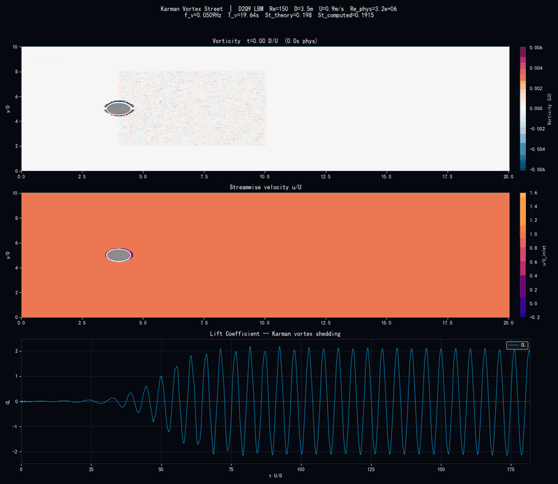
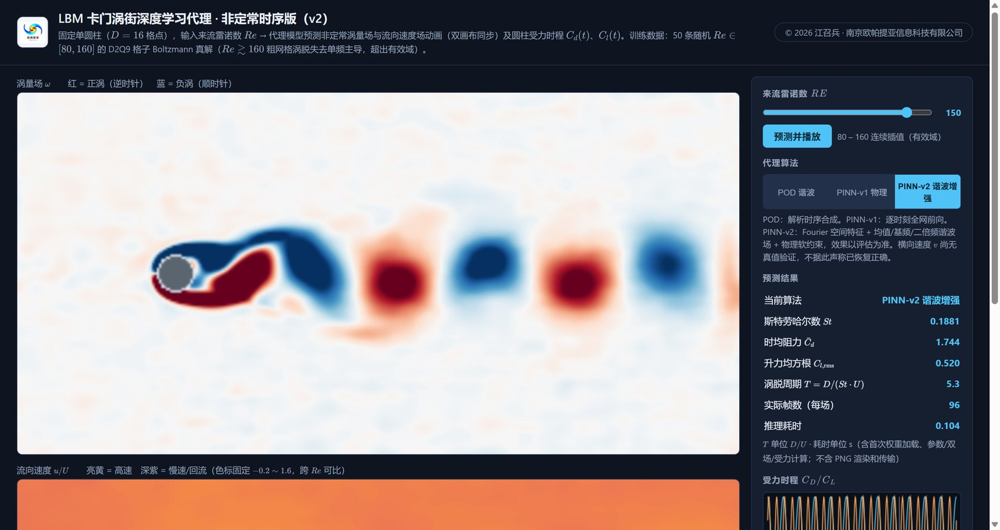
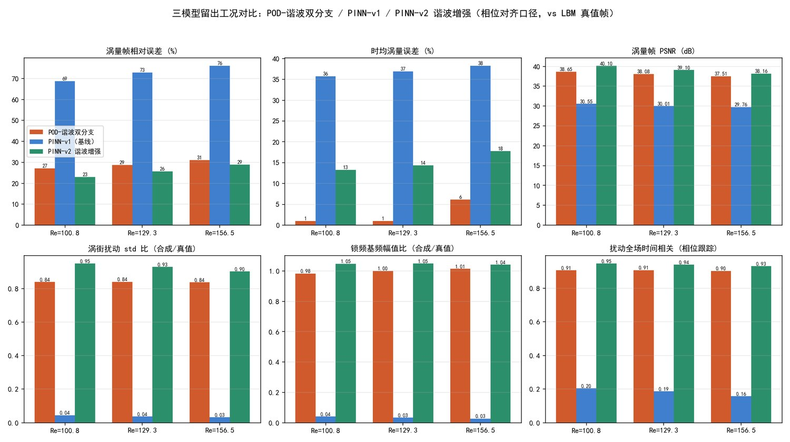
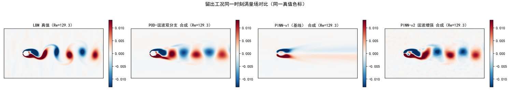

LBM 卡门涡街非定常代理模型 桌面本地版
单圆柱非定常涡街的三算法实时代理 —— 拖雷诺数、看双场同步动画、比三种模型、读受力时程，一步到位。
本软件以自研 D2Q9 格子 Boltzmann 求解器批量计算的 50 组单圆柱卡门涡街 非定常算例（Re = 80~160；每组暖机 16 个涡脱周期后采样 8 个周期，同步存储涡量帧、 流向速度帧与升阻力时程）为训练数据，构建了三种深度学习代理： POD-谐波双分支（解析时序合成，毫秒级）、 PINN 物理信息网络（端到端回归，涡量输运方程约束）、 PINN-v2 谐波增强（Fourier 空间特征 + 谐波系数场 + 物理软约束）。 在侧栏移动雷诺数滑块，即可得到涡量场与流向速度场的同步逐帧动画、受力时程曲线， 以及斯托劳哈尔数、时均阻力与升力均方根；切换算法按钮，三种模型对同一雷诺数即时给出各自结果。 软件在本机以网页界面运行，数据不出本机。

先看物理：上方动画为本软件自研 D2Q9 格子 Boltzmann 求解器逐时间步计算的真实结果 ——单圆柱 Re = 150：上层为涡量场（红蓝交替的正负涡脱落形成卡门涡街）， 中层为流向速度 u/U，下层为升力系数时程。代理模型的训练数据正是在这一求解器上批量生成。
软件界面与三种算法

软件界面：左侧涡量场 / 流向速度场双画布与受力时程（三者共享同一时间轴、逐帧同步）； 右侧为雷诺数滑块、三算法选择条、实时指标与模型说明（公式以 KaTeX 排版、随算法切换）。 图中为 PINN-v2 谐波增强算法的预测结果。
| 算法 | 路线 | 留出工况表现（Re = 100.8 / 129.3 / 156.5） |
|---|---|---|
| POD-谐波双分支 | 先分解后回归：逐像素多项式预测时均场与前两阶 POD 模态，MLP 预测 St 与谐波系数，按解析式合成 | 涡量帧误差 27~31%，时均场误差约 1~6%，96 帧双场约 0.10 s |
| PINN（v1） | 单网络端到端回归时空场，涡量输运方程与涡量定义作为物理残差参与训练 | 瞬时帧误差 69~76%；时间波动分量严重衰减（振荡幅值仅剩真值 3~4%），代表端到端路线的能力边界 |
| PINN-v2 谐波增强 | 时间不进网络：网络输出时均场与基频/二倍频谐波系数场（15 通道），Fourier 多尺度特征抑制谱偏差，物理软约束保留 | 涡量帧误差 23~29%（三模型最低），振荡保真度：扰动强度比 0.90~0.95、基频幅值比 1.04~1.05、相位相关 0.93~0.95；96 帧双场约 0.12 s |
振荡保真度是衡量"涡街是否被平均掉"的专项指标：扰动强度比（逐像素时间标准差之比）、 基频幅值比（锁定涡脱频率上的振荡幅度之比）与扰动相关（去均值扰动的时间相关性）。 PINN-v1 三项分别为 0.03~0.04 / 0.03~0.04 / 0.16~0.20 —— 场退化为近时均的模糊结构； PINN-v2 将扰动能量恢复了一个数量级以上，交替涡街完整保留。
主要功能
321×161 格子 · 50 组 LBM 非定常数据（47 训练 / 3 留出）· 每条 8 个涡脱周期约 64 帧 · 三模型在同一划分、同一相位对齐口径下评估；横向速度 v 由物理约束恢复、无真值数据，不作精度声明。
三模型对比评估（留出工况）

留出雷诺数上的六项指标对比（相位对齐口径，vs LBM 真值帧）： 涡量帧误差、时均涡量误差、PSNR、涡街扰动强度比、锁频基频幅值比、扰动相关。

同一时刻涡量场对比（同一真值色标）：LBM 真值呈现清晰的交替脱落涡对； POD 保留涡街但涡核偏平滑；PINN-v1 接近时均场；PINN-v2 恢复完整交替涡街， 涡核位置与极性正确，仅尾迹远端存在轻微幅值衰减。
互补格局：POD 以最低成本提供最高的时均统计精度；PINN-v2 提供最高的瞬时精度与完整的振荡结构， 推理速度与 POD 同量级（约 0.12 s / 96 帧双场，v1 为 2.9 s）； PINN-v1 保留为端到端路线的对照基线。
获取与运行
- 软件部署在作者本机（桌面本地版，数据不出本机）；本页面为软件介绍。
- 本机首次配置（一次性）：双击 LBM_KarmanDL\注册软件协议.reg， 注册 karman:// 启动协议。
- 日常使用：直接点击下方按钮——本机启动器会自动启动服务并打开预测界面 （服务已在运行时直接打开界面）；也可双击 LBM_KarmanDL\启动软件.bat 手动启动 （依赖：Python 3.10+，numpy / torch / flask / pillow）。
方法与说明
训练数据由作者自研的 D2Q9 格子 Boltzmann 求解器生成（BGK 碰撞、半步反弹边界、 动量交换法计力）。三模型共享同一数据与划分：POD-谐波双分支把非定常场解析分解为 时均场 + 锁频谐波调制的空间模态；PINN 以涡量输运方程与涡量定义残差约束端到端场网络； PINN-v2 将谐波结构写入网络输出层（15 个空间系数通道 + 解析时间合成）， 并以 Fourier 多尺度坐标特征缓解神经网络的谱偏差。全部模型在 PyTorch（CPU）上训练与推理。
有效域说明：Re ≳ 160 后粗网格涡脱失去单频主导，单频谐波参数化不再物理，故滑块限制在 80~160。 界面渲染采用每次请求的百分位自适应色标，视觉色彩不代表幅值正确性； 振荡保真度以留出工况的数值指标为准。